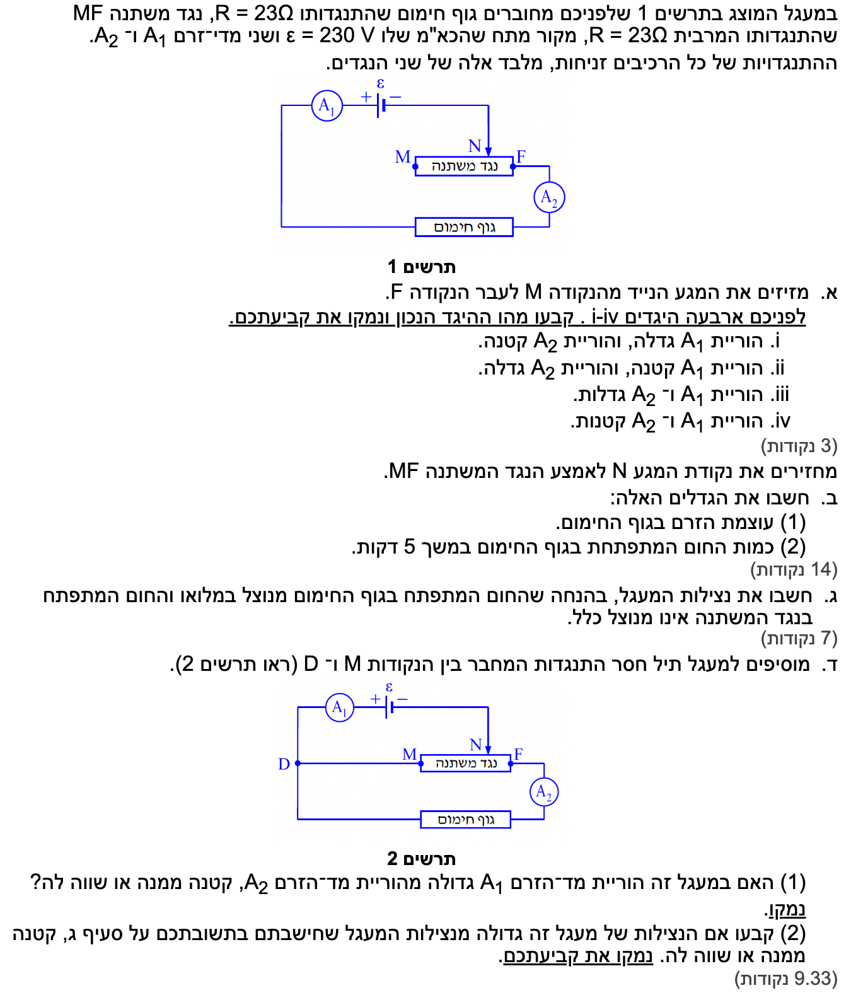

פתרון בגרות בפיזיקה - חשמל
בגרות 2015, שאלה 3 (מעגלי זרם ישר)
פתרון מודרך ומוסבר צעד-אחר-צעד, כולל ניתוח מעגל בחיבור ריאוסטטי
מבט כללי על השאלה
מעגל תרשים 1 הוא מעגל טורי (חיבור ריאוסטטי) המכיל: מקור מתח אידיאלי בעל כא"מ \( \varepsilon = 230 \text{ V} \), נגד חימום שהתנגדותו \( R_H = 23 \ \Omega \), ונגד משתנה \( MF \) המחובר אליו בטור שהתנגדותו המרבית היא \( 23 \ \Omega \).
הזרם יוצא מההדק החיובי, עובר דרך הנקודה \( F \), ויוצא מהנגד המשתנה בנקודת המגע הנייד \( N \). כלומר, החלק הפעיל של הנגד המשתנה הוא הקטע \( NF \). כאשר \( N \) נמצא ב-\( F \), אורך הקטע הוא אפס ולכן ההתנגדות היא אפס. כאשר \( N \) ב-\( M \), נכנסת כל ההתנגדות של הנגד למעגל.

סעיף א'
\( R_T = \Sigma R_i \) \( \Sigma\epsilon = \Sigma IR \)
פתרון צעד-אחר-צעד:
גוף החימום מחובר בטור לקטע הפעיל של הנגד המשתנה (\( NF \)). מדי הזרם \( A_1 \) ו- \( A_2 \) נמצאים שניהם בענף הראשי והיחיד של המעגל, ולכן שניהם מודדים את אותו זרם כללי: \( I_{A1} = I_{A2} = I_{total} \).
כאשר מזיזים את המגע הנייד \( N \) לעבר הנקודה \( F \), אורך הקטע הפעיל של הראוסטט (\( NF \)) הולך וקטן. כתוצאה מכך, ההתנגדות של הנגד המשתנה \( R_{NF} \) קטנה. ההתנגדות השקולה של המעגל כולו היא הסכום בטור: \( R_T = R_H + R_{NF} \), ולכן גם היא קטנה.
לפי חוק קירכהוף (כלל הלולאה \(\Sigma\epsilon = \Sigma IR\)), הזרם תלוי בהתנגדות השקולה:
מכיוון שהכא"מ קבוע וההתנגדות קטנה, הזרם הכולל במעגל גדל.
מסקנה: היגד iii הוא הנכון (הוריית \( A_1 \) ו- \( A_2 \) גדלות).
סעיף ב'
(2) כמות החום (העבודה) \( W_H \) המתפתחת בגוף החימום בזמן זה.
\( V = RI \) \( P = V_{AB} I \) \( \overline{P} = \frac{\Delta W}{\Delta t} \)
חישוב (1): עוצמת הזרם בגוף החימום
תחילה, נחשב את ההתנגדות השקולה של המעגל במצב זה. המעגל הוא טורי ולכן נחבר את ההתנגדויות:
נחשב את הזרם הכולל הזורם גם דרך גוף החימום (נובע מחוק אוהם למעגל השלם \(\Sigma\epsilon = \Sigma IR\)):
מסקנה ל-(1): עוצמת הזרם היא \( \frac{20}{3} \text{ A} \).
חישוב (2): כמות החום המתפתחת
נחשב את כמות החום (העבודה) על ידי שילוב נוסחאות מדף הנוסחאות. תחילה נשתמש בחוק אוהם למציאת המתח, לאחר מכן בנוסחת ההספק החשמלי, ולבסוף בקשר שבין הספק לעבודה (\( W = P \cdot t \)):
נציב את הנתונים לתוך הביטוי שפיתחנו:
מסקנה ל-(2): כמות החום היא בקירוב \( 3.07 \times 10^5 \text{ J} \).
סעיף ג'
\( \eta = \frac{P_{eff}}{P_{in}} \) \( P = V_{AB} I \) \( V = RI \)
חישוב הנצילות:
במעגל טורי, הזרם (\( I \)) זהה בכל הרכיבים. נציב את חוק אוהם (\( V = IR \)) בתוך נוסחת ההספק (\( P = VI \)) ונקבל שההספק הוא \( P = I^2 R \). נשתמש בכך כדי לבטא את ההספקים:
נציב בביטוי של הנצילות ונצמצם את הזרם בריבוע:
מסקנה: נצילות המעגל היא \( \frac{2}{3} \) (בקירוב 66.7%).
סעיף ד'
(2) קביעה האם הנצילות גדולה/קטנה/שווה לזו מסעיף ג'.
סכמה של המעגל לאחר הוספת התיל (חיבור מעורב):

\( \Sigma I_{in} = \Sigma I_{out} \)
פתרון חלק (1): מדי הזרם
אם מתארים את זרימת הזרם המקובל מן ההדק החיובי אל ההדק השלילי, אז הזרם יוצא מן המקור, עובר תחילה דרך מד הזרם \( A_1 \), ומגיע לנקודה \( D \). שם הוא מתפצל לשני נתיבים מקבילים: נתיב אחד עובר דרך התיל שהוספנו אל \( M \) ואז דרך הקטע \( MN \) של הנגד המשתנה, ונתיב שני עובר דרך גוף החימום ודרך מד הזרם \( A_2 \). לאחר מכן שני הענפים מתחברים שוב וממשיכים אל ההדק השלילי של המקור.
מד הזרם \( A_1 \) מודד את הזרם הכולל המגיע לפני הפיצול. מד זרם \( A_2 \) מודד רק את זרם הענף של גוף החימום. על פי חוק קירכהוף בצומת:
מסקנה (1): היות שקיים זרם בקטע \( MN \), הוריית \( A_1 \) גדולה מהוריית \( A_2 \).
פתרון חלק (2): שינוי הנצילות
כדי להוכיח את השינוי בנצילות, נבצע חישוב של המצב החדש. הוספת התיל חיברה את הנגד \( R_{MN} = 11.5 \ \Omega \) במקביל לגוף החימום \( R_H = 23 \ \Omega \).
נחשב את ההתנגדות השקולה של החלק המקבילי (\( R_P \)) ואת ההתנגדות הכוללת של המעגל החדש (\( R_{T2} \)):
בחיבור מקבילי, המתח על שני הענפים שווה (\( V_H = V_{MN} \)). מכיוון שהמתח שווה, הזרם מתחלק ביחס הפוך להתנגדויות. נוכיח זאת בעזרת חוק אוהם:
על פי חוק קירכהוף לצמתים, הזרם הראשי \( I \) מתפצל לשני הענפים (\( I = I_H + I_{MN} \)). נציב את הקשר שמצאנו כדי לבטא את הזרם בגוף החימום כחלק מהזרם הכולל:
כעת, לאחר שהוכחנו שהזרם בגוף החימום הוא שליש מהזרם הראשי, נבטא את ההספק המנוצל (על גוף החימום) ואת ההספק הכולל המושקע במעגל:
נחלק את ההספק המנוצל בהספק הכולל (הזרם \( I^2 \) מצטמצם במונה ובמכנה):
מסקנה (2): הנצילות החדשה (13.3%) קטנה משמעותית מזו שבסעיף ג' (66.7%).